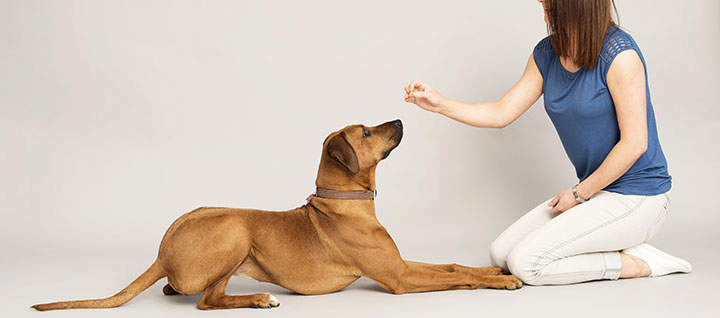
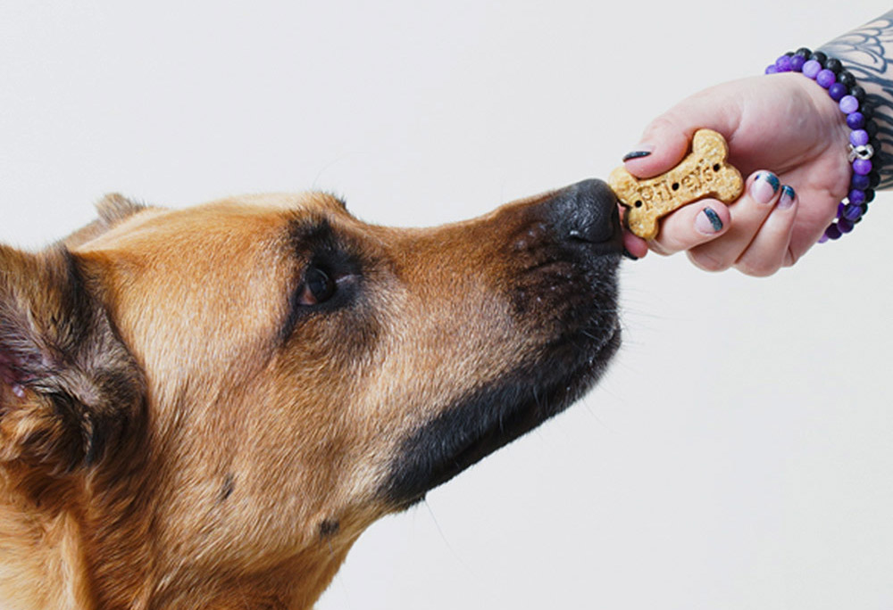

Start training your dog to roll over by giving it the "down" command. Once it is lying down, the next step is to get it to begin to roll.

Hold a treat by its nose, and then pull the treat from the tip of its nose toward its shoulder. Your dog should turn its head to follow the treat.

If it does, you can continue to pull the treat around the dog's shoulder so it will have to lie down on its side to follow it.
Continue holding the treat close to your dog's nose, and pull it all the way around, so it has to roll all the way over to follow it. If it completes the full roll, praise the dog, or click your clicker and provide a treat.